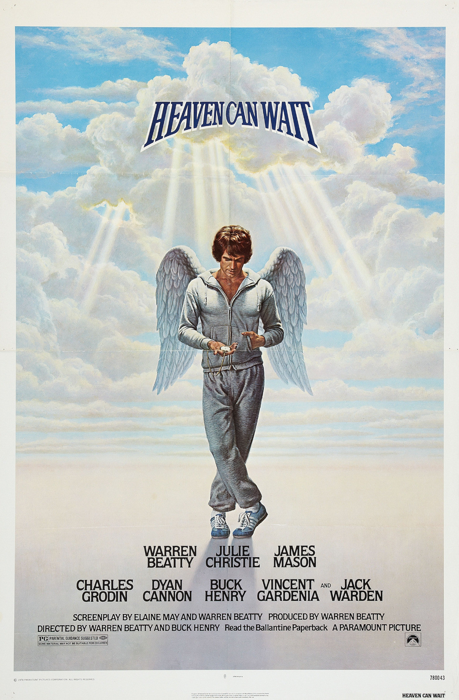

Heaven Can Wait
51st Academy Awards
(Oscars 1979)
9 Nominations, 1 Award
| Nominations | ||
|---|---|---|
| Category | Nominees | Result |
| Best Picture | Warren Beatty | Nominated |
| Actor in a Leading Role | Warren Beatty | Nominated |
| Actor in a Supporting Role | Jack Warden | Nominated |
| Actress in a Supporting Role | Dyan Cannon | Nominated |
| Directing | Buck Henry and Warren Beatty | Nominated |
| Writing (Screenplay Based on Material from Another Medium) | Elaine May and Warren Beatty | Nominated |
| Cinematography | William A. Fraker | Nominated |
| Art Direction | Edwin O'Donovan, George Gaines, and Paul Sylbert | Won |
| Music (Original Score) | Dave Grusin | Nominated |